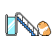
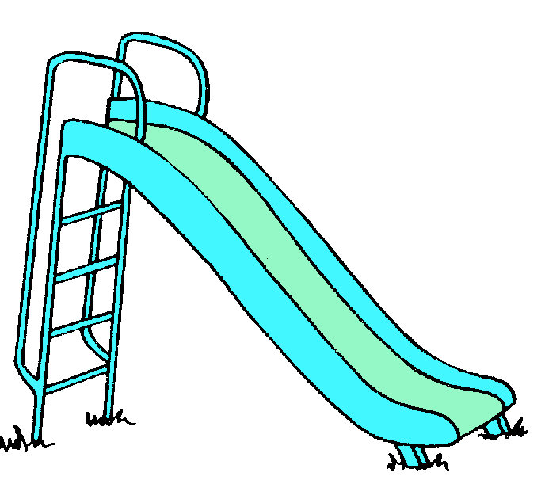
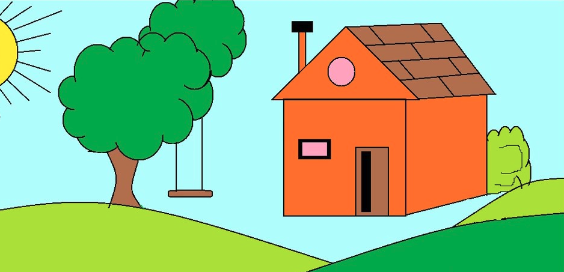

Best Playground Toys!!!
Slides
Slides are the best! You can climb up and slide down super fast. Sometimes, at the bottom, it feels like the world shifts just a little. Maybe it's just your imagination, but it's always fun to wonder.
Once, my friend Jimmy said he saw something weird at the bottom of the slide. It was like a shadow that didn't belong to anyone. He got scared and ran away, but when we went back, it was gone. Some kids say if you slide down at exactly midnight, you might see it too. I haven't tried yet. Maybe one day I will.


Swings
Swings let you fly through the air! Pump your legs to go higher and higher. Have you ever felt like you could touch the sky? Sometimes, if you go high enough, you might see something out of the corner of your eye. A bird? A plane? Who knows?
One evening, as the sun was setting, I saw a figure swinging next to me. But when I looked again, there was no one there. My mom says it's just my imagination, but it felt so real. I heard that if you swing high enough and close your eyes, you can feel someone pushing you higher. It's like having an invisible friend with you. Just don't look back too quickly, or you might scare them away.


Monkey Bars
Monkey bars are great for climbing and hanging around. Upside down, the world looks different. Sometimes you hear things differently too. Was that a whisper, or just the wind? The monkey bars are a great place to let your imagination run wild.
There’s a rumor that if you hang upside down for too long, you might hear someone whisper your name. My friend Sarah told me she heard it once, but she was too scared to stay and listen. Some say it's just the wind, but others think it's the spirit of a kid who used to play here a long time ago. It's kind of spooky, but also exciting. Next time, I’ll try to stay longer and see what happens.


Seesaw
The seesaw is fun with a friend. You can go up and down together, sharing laughs and stories. Sometimes, when you're up high, it feels like you're on top of the world. And when you're down low, you might notice something interesting on the ground that you hadn't seen before.
One day, I was on the seesaw with my friend, and we saw a shiny object buried in the dirt. It looked like an old coin, but when we dug it out, it vanished. We both saw it, but no one believes us. They say that sometimes the seesaw shows you things that aren’t really there. Maybe it’s a trick of the light, or maybe it’s something else. It makes you think about what’s really hidden in the playground.